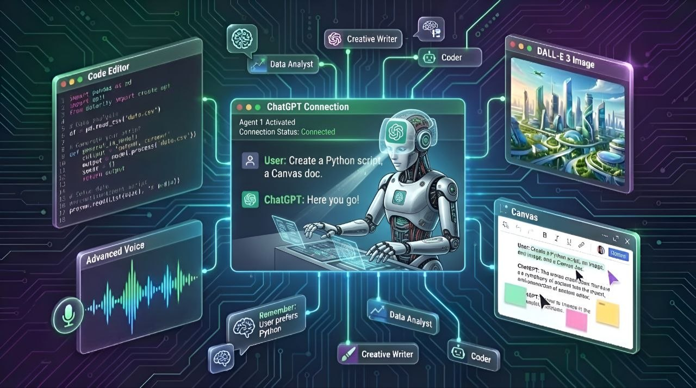
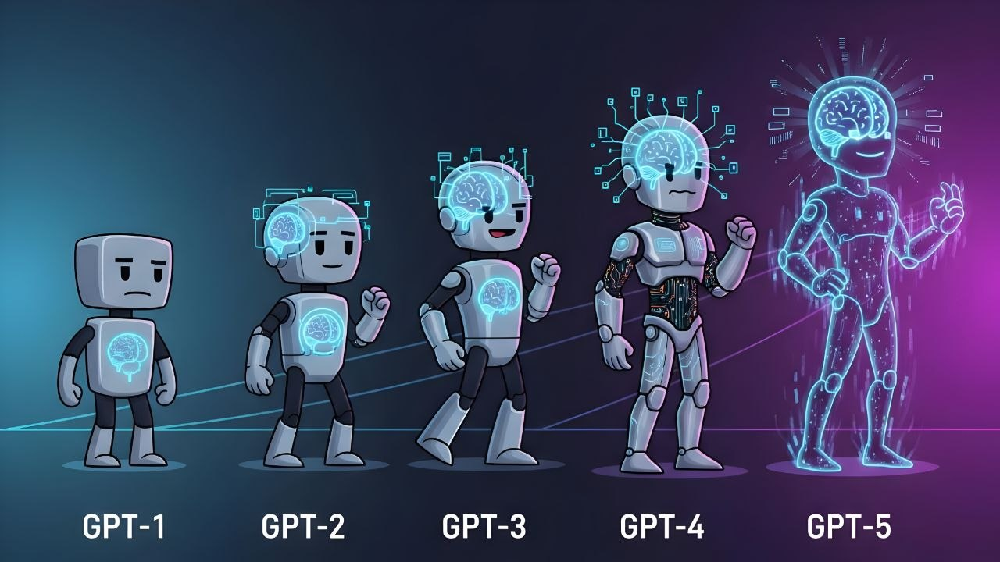

ChatGPT has become a useful tool for learning, writing, coding, research, planning, and everyday tasks. But it is more than a chatbot that answers questions. Depending on the tools and features available in your account, it can also work with files, understand images, talk with you by voice, create images, help analyze data, and support more complex projects.
ChatGPT keeps changing as OpenAI updates its models and adds new features. In this guide, we explain what ChatGPT is, how it works, what you can do with it in 2026, how GPT-6 compares with earlier model options, and what is known about future versions. We also separate confirmed information from predictions, so you can make decisions without relying on rumors.
1. What Is ChatGPT?
ChatGPT is an AI assistant made by OpenAI. You can type a question or instruction, and it responds in natural language. You can use it to explain a difficult topic, write a first draft, plan a trip, understand code, summarize a document, or explore an idea.
The name can be confusing at first. ChatGPT is the product or app that you open and use. GPT refers to the AI models that power many of its responses. The app may offer different models, tools, and account features over time. So, a new GPT model and a new ChatGPT app feature are not always the same thing.
ChatGPT is designed to help people work with information and ideas. It can be useful for students, teachers, developers, business owners, writers, researchers, and everyday users. It is still important to check important answers because an AI assistant can make mistakes.
Is ChatGPT a search engine?
Not exactly. A traditional search engine mainly helps you find pages on the web. ChatGPT creates a response based on the information available to its model and the tools it can use. When web search is available and enabled, it may also look for current information and provide links to sources. For important facts, open the sources and check them yourself.
2. How Does ChatGPT Work?
ChatGPT uses machine-learning models trained on large collections of information. These models learn patterns in language and other data. When you send a prompt, the model processes the context and generates a response one part at a time.
Modern AI systems can do more than predict text. Depending on the model and enabled tools, they may also work with images, audio, files, structured data, and other types of input. Some tasks may use additional tools rather than relying only on the language model.
Does ChatGPT understand like a human?
ChatGPT can follow instructions and work with context in impressive ways, but it does not think or experience the world like a person. It does not have human feelings, personal experiences, or perfect knowledge. It generates answers from learned patterns, the conversation, and any tools or information available to it.
3. Main ChatGPT Features in 2026
ChatGPT's available features can change. Some tools may depend on your plan, country, device, age, workspace settings, or gradual feature rollout. You may not see every feature in every account.
Text chat and writing help
You can ask ChatGPT to explain a subject, answer questions, rewrite a paragraph, check grammar, create an outline, draft an email, or change the tone of a message. You can also ask it to make a long explanation shorter or explain an idea in simple words.
Learning and tutoring
ChatGPT can explain lessons step by step, create practice questions, give examples, and help you review a topic. Instead of asking only for an answer, ask it to show the method and then give you a similar question to solve yourself.
Coding and software development
Developers can use ChatGPT to understand code, find possible bugs, write small functions, explain errors, compare technologies, create test ideas, and plan software architecture. It can assist with languages such as Python, JavaScript, TypeScript, Java, C++, and others.
However, generated code should be reviewed and tested. Check security, performance, dependencies, licensing, and edge cases before using it in a real product.
Image understanding
Where image input is supported, you can upload a picture, screenshot, chart, or document image and ask questions about visible details. For example, you can ask what a warning message means or request an explanation of a chart. Image understanding can miss small text or details, so verify important information.

Image generation and editing
In accounts where image generation is available, you can describe a picture you want to create. You may also be able to upload an image and request changes. Clear instructions about the subject, style, background, layout, and text can help you get a better result. Always review generated images for incorrect details, unwanted text, and possible brand or copyright concerns.
Voice conversations
Supported ChatGPT apps can let you speak instead of typing. You can use voice to ask questions, practice a language, or have a spoken conversation. Voice options and limits may differ by plan and device. Voice features do not mean every ChatGPT mode supports live video or screen sharing.
File uploads and document analysis
Where file uploads are supported, you can provide documents, spreadsheets, presentations, or other supported files and ask ChatGPT to summarize or explain them. It may help compare sections, find key points, or turn information into a table. Check the result against the original file, especially when numbers, contracts, or instructions matter.
Data analysis
Some ChatGPT experiences can work with spreadsheets and structured data, create charts, calculate values, and explain patterns. This can save time when exploring a dataset. Before making a business or financial decision, verify formulas, filters, units, and the source data.
Web search and current information
When search tools are available, ChatGPT can look up information from the web and show source links. This is useful for recent news, product updates, public information, and research. Search results can still be incomplete or misleading. Read the original source and check its date.
Memory and personalization
Depending on your settings and account, ChatGPT may use saved context or information from earlier conversations to make future chats more relevant. You should review the available memory controls in Settings. Do not assume that every conversation is remembered or that every account has the same memory options.
Projects and connected tools
Some accounts offer ways to organize chats and files around a project. ChatGPT may also connect with supported apps or services when you choose to connect them. Connected tools can have their own permissions and privacy rules. Review what an integration can access before enabling it.
4. ChatGPT, GPT Models, and GPT-6 Explained
It helps to understand three separate ideas:
- ChatGPT: The app and service where you chat with the AI.
- GPT model: The AI system selected to generate or help with a response.
- Tools and features: Extra abilities such as file analysis, voice, image generation, or web search. These are not simply model names.
As of November 3, 2026, GPT-6 is the latest consumer model label in the ChatGPT model menu described for this article. The menu can also retain earlier model choices, including GPT-5.6 and GPT-5.5, for eligible paid users. The exact choices you see depend on your plan and account access.
A newer model number does not mean every answer will be better for every task. Different models can have different strengths, speed, reasoning behavior, tool support, and usage limits. The best choice depends on what you need to do.
5. GPT-6 vs GPT-5.6 vs GPT-5.5
The table below explains the model options at a high level. It does not claim that one model wins every test or task. OpenAI can change model access, names, and limits, so check the model selector and official release notes for the latest details.
| Model option | What it means | What to consider |
|---|---|---|
| GPT-6 | Latest consumer model label in the ChatGPT menu as of November 3, 2026. | Try it for current general use, then judge the result on your own task. |
| GPT-5.6 | An earlier model option that may remain available to eligible users. | Useful when you want to compare responses or continue a workflow that used this model. |
| GPT-5.5 | Another earlier model option that may remain available to eligible users. | Availability and limits depend on the account and model selector. |
What should you compare before choosing?
- Answer quality: Does it solve your actual problem correctly?
- Reasoning: Can it explain a difficult task in clear steps?
- Speed: Does it respond quickly enough for your workflow?
- Tool support: Does it support the files, images, voice, or other tools you need?
- Usage limits: How much can you use it under your plan?
- Consistency: Does it give reliable results across repeated tests?
For a fair comparison, give each model the same prompt, the same source material, and the same success criteria. Do not judge a model from one answer alone.

6. When Is the Next ChatGPT Version Coming?
There is no confirmed public release date in the information available for this article for the next major GPT model after GPT-6. OpenAI may release model updates, smaller improvements, or new ChatGPT features at different times. A product update does not always mean a completely new GPT generation.
Be careful with social media posts that claim an exact launch date without an official announcement. A rumored name, leaked schedule, or prediction is not the same as a confirmed release. For a reliable update, check OpenAI's official ChatGPT release notes and announcements.
What might a future GPT version improve?
Future AI models may become better at several areas, but the points below are possibilities, not confirmed features or promises from OpenAI:
- More reliable answers: Better handling of facts, uncertainty, and source checking.
- Stronger reasoning: Better support for complex questions, planning, and multi-step work.
- Improved coding: More useful help with large codebases, debugging, testing, and software tasks.
- Better multimodal work: More natural ways to work with text, images, audio, and video.
- Longer task support: Better ability to manage multi-step tasks while asking for approval when needed.
- More useful personalization: Better controls for preferences and project context.
- Lower cost and faster responses: Future systems may become more efficient, although this is not guaranteed.
- Stronger safety: Better protection against harmful instructions, privacy risks, and misuse.
How could a future version differ from GPT-6?
A future model could improve the quality of answers, support more types of input, use tools more effectively, or complete some tasks with fewer mistakes. But there is no confirmed feature list for an unannounced model. It would be misleading to say that a future version will definitely create full applications, replace professional workers, or perform any specific task perfectly.
How to follow future ChatGPT updates
- Visit the official ChatGPT Release Notes.
- Check the OpenAI News page for major announcements.
- Open ChatGPT's model selector to see which models are available to your account.
- Read the release date and plan limits before relying on a new feature.
7. What Can You Use ChatGPT For?
For students
- Explain school or college topics in simple language.
- Create revision notes and practice questions.
- Practice a new language or improve writing.
- Understand how to solve a problem instead of copying an answer.
For developers
- Understand unfamiliar code and programming concepts.
- Plan APIs, database structures, and application features.
- Generate test cases and investigate error messages.
- Review code for possible bugs and security problems.
For businesses and freelancers
- Draft emails, proposals, product descriptions, and reports.
- Organize research and meeting notes.
- Build checklists and standard operating procedures.
- Explore customer feedback and summarize supported data.
For everyday users
- Plan meals, trips, schedules, and personal projects.
- Compare products using information you provide or verified sources.
- Translate and rewrite everyday messages.
- Get help understanding settings, forms, and technical instructions.
8. How to Use ChatGPT
- Open the official website or app. Visit chatgpt.com or install the official app from your device's trusted app store.
- Sign in or create an account. Follow the instructions shown by OpenAI.
- Start a new chat. Type what you want help with in the message box.
- Give enough context. Explain your goal, audience, format, and any limits.
- Review the answer. Ask follow-up questions if something is unclear or incomplete.
- Check important facts. Use reliable sources before acting on medical, legal, financial, or safety-related information.
ChatGPT is available on the web and through official mobile and desktop experiences where supported. Exact app availability and features can vary by operating system and region. Avoid unofficial apps that use the ChatGPT name or logo without authorization.
9. How to Write Better ChatGPT Prompts
A prompt is the instruction or question you send to ChatGPT. A clear prompt usually produces a more useful answer. You do not need special commands. Explain the task in plain language.
A simple prompt formula
- Role: Tell it what kind of helper you need.
- Task: Explain exactly what you want done.
- Context: Share the information it needs.
- Format: Say whether you want a list, table, email, code, or explanation.
- Limits: Mention length, language, audience, or things to avoid.
Example prompt
Act as a beginner-friendly programming tutor. Explain what an API is using simple English. Give one real-world example, show a small JavaScript example, and finish with three practice questions. Do not use difficult technical words without explaining them.
If the first answer is not right, do not start over immediately. Tell ChatGPT what is missing, what is incorrect, and how you want the answer improved.
10. ChatGPT Free and Paid Plans
ChatGPT may offer free access and several paid plans. The exact plan names, prices, usage limits, model access, and tools can change by country and over time. Some features may also be limited by daily or rolling usage caps.
Before paying, check the current official ChatGPT pricing page. Compare the features you will actually use, not just the plan name.
Should you pay for ChatGPT?
If you only ask a few everyday questions, a free plan may be enough. If you use ChatGPT regularly for work, coding, research, file analysis, or other demanding tasks, a paid plan may be worth comparing. Check the limits and terms before subscribing. Do not assume that paying removes every usage limit.
11. Privacy, Safety, and Data Protection
Think carefully before sharing information with any online AI service. Do not paste passwords, payment card details, private keys, confidential customer records, or sensitive business information unless you have checked the service's terms and the settings approved by your organization.
- Review data controls: Check the privacy and data settings available in your account.
- Use temporary chat when appropriate: If this option is available, understand its limits before using it for sensitive topics.
- Check shared links: Do not create or share a chat link containing private information.
- Protect your account: Use a strong, unique password and available account security features.
- Review connected apps: Check permissions before connecting an external service.
- Verify important advice: AI output should not be treated as a professional decision.
For current details, read the OpenAI Privacy Policy and the settings shown in your own account. Privacy options and data handling can change.
12. Limits and Things ChatGPT Can Get Wrong
- Incorrect answers: It may provide a confident answer that is wrong or incomplete.
- Outdated information: Without a current search or updated source, it may not know recent events.
- Made-up details: It can sometimes invent references, quotes, facts, or code behavior.
- Weak context: A vague prompt may lead to a vague or unsuitable answer.
- Complex tasks: Long projects may need clear steps, human review, and repeated testing.
- Usage limits: Some models and tools may have account-based limits.
- Bias: Responses can reflect problems or gaps in the data and methods used to build AI systems.
Use ChatGPT as an assistant, not as the final authority. For medical, legal, financial, and other high-impact decisions, consult a qualified professional and check trusted sources.
13. ChatGPT Alternatives
ChatGPT is not the only AI assistant. You may also compare:
- Google Gemini — Google's AI assistant and related tools.
- Claude — Anthropic's AI assistant.
- Perplexity — an AI-powered answer and research product.
- Microsoft Copilot — Microsoft's AI assistant experience.
Each service changes over time and may have different strengths, limits, and prices. Try the same task on more than one service and compare accuracy, source quality, ease of use, and cost.
14. Pros and Cons of ChatGPT
| Pros | Cons |
|---|---|
| Can explain many topics in simple language. | Can give incorrect or made-up information. |
| Helps with writing, learning, coding, and planning. | Important output still needs human review. |
| Supports different input types and tools where available. | Some features depend on plan, region, or usage limits. |
| Can help organize ideas and save time. | May misunderstand vague or incomplete instructions. |
| Offers a simple chat-based way to work with AI. | Privacy settings and data practices need attention. |
15. Frequently Asked Questions
Is ChatGPT free to use?
ChatGPT may be used through a free plan, but free access can have limits. Paid plans may provide different model access, tools, or higher limits. Check the official pricing page for current details.
What is the latest ChatGPT model in 2026?
As of November 3, 2026, GPT-6 is the latest consumer model label in the ChatGPT model menu described in this guide. Eligible users may also see earlier options such as GPT-5.6 and GPT-5.5. Model availability can vary by account.
When will the next GPT model be released?
There is no confirmed public release date available here for the next major model after GPT-6. Follow OpenAI's official announcements and release notes instead of relying on rumors.
Will the next ChatGPT version be better than GPT-6?
A future model may improve some areas, but no model is guaranteed to be better at every task. Wait for official details and independent testing before deciding.
Can ChatGPT create images?
Image generation is available in supported ChatGPT experiences. The exact access and limits depend on the account and current product features.
Can ChatGPT write computer code?
Yes. It can help explain, draft, debug, and review code. You should still test the code, review security, and understand what it does before using it.
Can I use ChatGPT on my phone?
Yes. You can use ChatGPT through a mobile browser or an official app where it is available. Download apps only from trusted app stores and check the publisher.
Does ChatGPT always give correct answers?
No. It can make mistakes, misunderstand a question, or use outdated information. Verify important facts with reliable sources.
Is ChatGPT safe for private information?
Do not share passwords, payment details, private keys, or confidential information without checking the privacy terms and your organization's rules. Review your account's data controls.
Can ChatGPT replace Google Search?
It can help answer questions and may search the web when that tool is available, but it does not replace every search task. Use search engines and original sources when you need to find specific websites, compare sources, or verify current facts.
Final Thoughts
ChatGPT is a flexible AI assistant that can help with learning, writing, coding, research, planning, and many everyday tasks. Its models and features continue to change, so it is worth checking the model selector and official release notes from time to time.
GPT-6 is the latest consumer model label covered in this guide, while GPT-5.6 and GPT-5.5 may remain available as earlier choices for eligible users. The next major model's release date and feature list should not be treated as known until OpenAI announces them. Use ChatGPT to support your work, check important answers, and protect your private information.